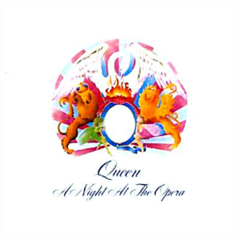
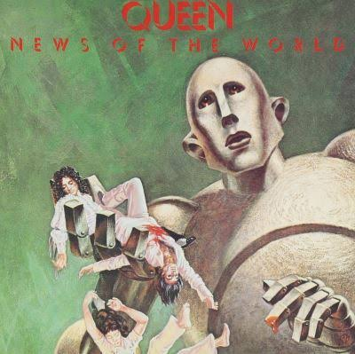
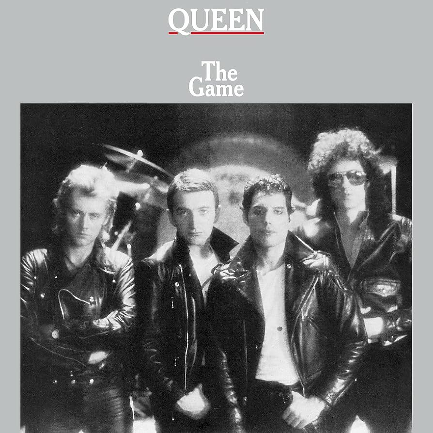

Réalisations : Queen & Freddie Mercury
Albums et chansons emblématiques

A Night at the Opera (1975) : album majeur incluant Bohemian Rhapsody, l'un des morceaux les plus célèbres de l'histoire du rock.

News of the World (1977) : porté par les hymnes de stade We Are the Champions et We Will Rock You.

The Game (1980) & The Works (1984) : succès internationaux avec Crazy Little Thing Called Love, Another One Bites the Dust et Radio Ga Ga.
Scène, écriture et héritage
- Auteur-compositeur et interprète : Freddie Mercury a signé de nombreux classiques du répertoire de Queen tout en marquant le public par sa présence scénique et sa tessiture vocale.
- Concerts de référence : des prestations devenues légendaires, notamment au Live Aid (1985) et lors du Magic Tour (1986).
- Distinctions et postérité : un catalogue toujours largement écouté et salué par des distinctions majeures de l'industrie musicale.